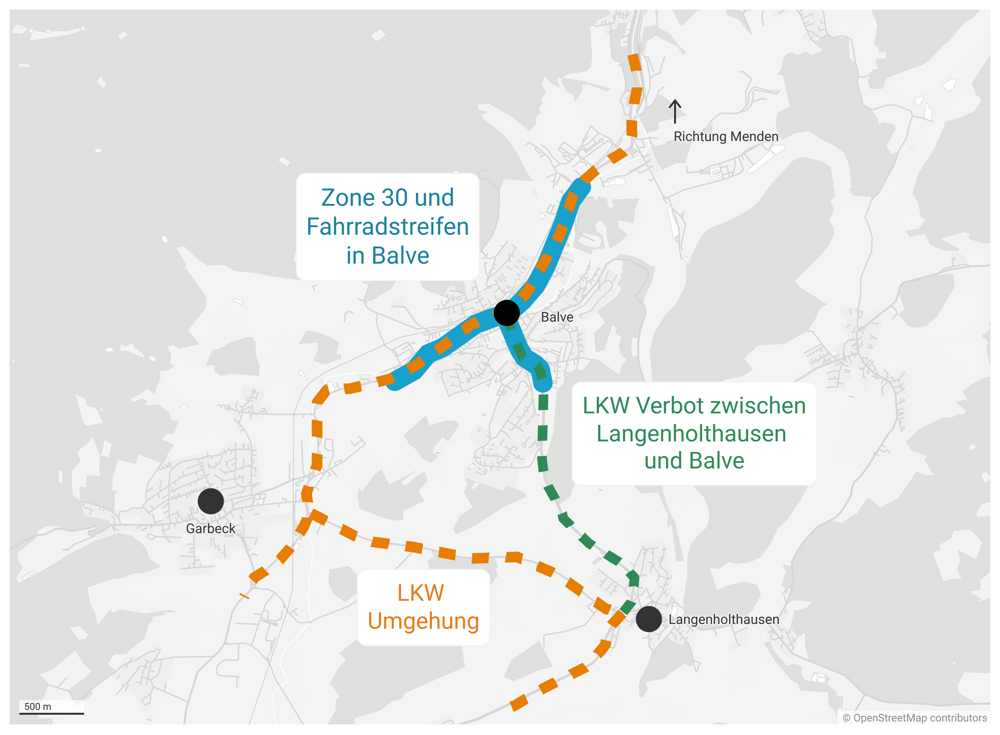

Das Verkehrsproblem in Balve lösen
Einfache und günstige Maßnahmen können die Lebensqualität der Bürger:innen
drastisch verbessern.
Das Problem
Nicht nur seit der Schließung der Autobahnbrücke gibt es folgende Probleme:
-
Ein enorm starkes Verkehrsaufkommen. Das Kreuzen der Hauptstraße
im Stadtzentrum ist de facto nicht sicher möglich.
-
Zu viele LKW quetschen sich durch die Balver Hauptstraße. Neben
dem Sicherheitsaspekt kommt hier auch ein erhöhtes
Lärmaufkommen und Unfallgefahr hinzu. Erholung im Stadtgebiet ist
nicht möglich.
-
Keine Radwege oder Fahrradschutzstreifen entlang der Hauptstraße.
Stadtradeln ist zwar eine schöne Idee, sicher fühlt man sich aber nicht.
-
Es wird zu häufig zu schnell gefahren. Insbesondere mit parkenden
Autos ist Tempo 50 zu hoch.
Die Lösung
Die Probleme lassen sich einfach entschärfen. Fahren im Stadtgebiet Balve
kann sicherer gemacht werden, indem Tempo 30 eingeführt wird. Zudem
verhindert ein LKW-Verbot zwischen Langenholthausen und Balve, dass sich
schweres Gefährt durch die Stadtmitte quetscht. Der Verkehr kann problemlos
umgeleitet werden. Dies ist in der folgenden Grafik illustriert.

Fahrradschutzstreifen machen es für Autofahrer:innen deutlicher, dass nur
bei ausreichendem Abstand überholt werden darf. Zudem ist ein Zebrastreifen
auf Höhe der Volksbank notwendig um das Überqueren der Hauptstraße wieder
sicher zu machen.
Die Ausreden
Hier soll nur kurz auf mögliche Argumente eingegangen werden.
-
Nicht genügend Platz für Autos.
Fahrräder müssten laut StVO auch jetzt schon innerorts mit 1.5m
Abstand überholt werden. Ein Schutzstreifen für Radfahrende würde also
nichts an der Platzverteilung im Straßenverkehr ändern.
-
Das ist zu teuer!
Die Kosten würden sich auf ein paar wenige Schilder und Farbe
belaufen.
-
Das liegt in der Hand von Straßen.NRW und wir können da nichts machen.
Sich für die Belange der Bürger:innen einzusetzen ist genau die
Aufgabe der lokalen Politiker:innen. Sicherlich lässt sich hier ein
Weg finden; andere Städte im näheren Umkreis haben es auch geschafft.
Was tun?
Klicken Sie auf den folgenden Link und schreiben Sie der Stadt Balve eine
Nachricht in der Sie Ihren Wunsch nach einer verkehrsberuhigten Stadt
äußern.
Schicken Sie eine Mail an die Stadt Balve.